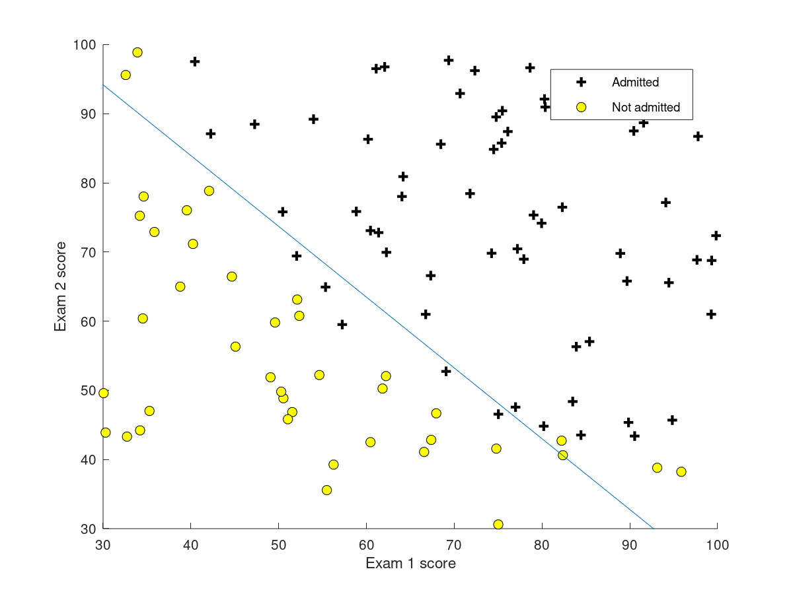

cousera_machine_learning_week3
这是机器学习课程笔记的第三篇，内容包括：分类问题、逻辑回归（假设函数、损失函数）、梯度下降法求解\(\theta\)、决策边界、如何解决过拟合问题、以及多类分类问题。 希望自己能够坚持下去~
序言
这一章主要讲述了适用于分类问题的逻辑回归(Logistic Regression)算法。通过Logistic 函数，我们能够将样本中值对应至(0,1)，根据样本建立损失函数，按照损失函数最小原理获得最优的\(\theta\),并以此建立假设函数。最后通过假设函数进行分类预测，如果预测值≥0.5，则标记为1的概率为预测值，预测为1；反之则标记为0。（注意，此时只说明0-1分类的情况）。
不难看出，逻辑回归的思路与线性回归是一致的。不同之处在于假设函数发生了变化： \[ g(z) = \frac{1}{1+e^{(-z)}}\\ z = \theta^T X\\ h(\theta) = \frac{1}{1+e^{(-\theta^TX)}} \]
逻辑回归
为了使预测值位于[0,1]，引入逻辑回归函数，调整值域。
假设函数
\[ h_\theta = g(\theta^Tx) \\ g(z) = \frac{1}{1+e^{-z}} \]
curve(1/(1+exp(-x)),from = -100, to = 100, col = "red", lwd = "2", main = "Logistic Function") 通过变换，所有的X值都被映射到了[0,1]范围内。
通过变换，所有的X值都被映射到了[0,1]范围内。
损失函数
\[J(\theta) = \frac{1}{m}\sum_{i=1}^{m}Cost(h_\theta(x^{(i)}),y^{(i)})\\ = -\frac{1}{m}[\sum_{i=1}^my^{(i)}logh_\theta(x^{(i)})+(1-y^{(i)})log(1-h_\theta(x^{(i)}))]\]
梯度下降法最小化损失函数
与线性回归法形式上完全一致：不同之处仅在于\(h_\theta(x^{(i)})\)的含义不同，即进行了映射。 \[\frac{\partial J(\theta)}{\partial\theta_j} = \frac{1}{m}\sum_{i=1}^m(h_\theta(x^{(i)-y^{(i)}}))x_j^{(i)}\\\theta = \theta - \alpha\frac{\partial J(\theta)}{\partial\theta_j}\]
决策边界
在逻辑回归曲线中，当\(x\leq0\)时，\(y\leq 0.5\)；当\(x\geq0\)时，\(y\geq 0.5\)。由于我们以0.5作为预测的threshold，因此x = 0为边界曲线。
对于更复杂的曲线，仍可推断出。\(h_\theta(x) = 0\)为边界曲线。

边界曲线
疑问
- 在逻辑回归中，为什么使用梯度下降法不需要决定\(\alpha\)(下降速率)？